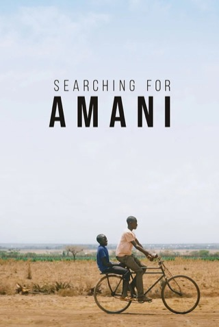

About the film

In the heart of Kenya, a tragedy shatters a young boy's life. Simon Ali, 13, finds himself in a world of mystery when his father, a respected conservancy guide, is found dead under suspicious circumstances. Armed with his video camera and an unwavering desire for truth, Simon and his best friend Haron embark on a perilous journey to uncover the secrets behind his father's demise.
At the festival
- 2024 Friday, November 8, 2024 · 4:30 PM · U.S. Naval Heritage CenterFollowed by post-screening discussion with co-director Debra Aroko, moderated by Lana Garland of Double Exposure.
Sessions about this film
- 2024 · Fri Nov 8 · 10:45 AMPanel · DX²Personal Stories, Universal Impact: The Power of Investigative FilmmakingGerad Argeros, Debra Aroko, Erika Cohn, Emma D. Miller, Rajal Pitroda, Russell Leigh Sharman, Russell Leigh Sharman
More films on these topics
 Crime & ParodyWill Thwaites2026 · 88 min
Crime & ParodyWill Thwaites2026 · 88 min Kikuyu LandAndrew H. Brown, Bea Wangondu2026 · 93 min
Kikuyu LandAndrew H. Brown, Bea Wangondu2026 · 93 min KhartoumIbrahim Snoopy Ahmad, Timeea Mohamed Ahmed, Rawia Alhag2025 · 82 min
KhartoumIbrahim Snoopy Ahmad, Timeea Mohamed Ahmed, Rawia Alhag2025 · 82 min Teaching AmericaAnurima Bhargava2025 · 20 min
Teaching AmericaAnurima Bhargava2025 · 20 min Dust to DustKôsai Sekine2024 · 89 min
Dust to DustKôsai Sekine2024 · 89 min Ernest Cole: Lost and FoundRaoul Peck2024 · 105 min
Ernest Cole: Lost and FoundRaoul Peck2024 · 105 min